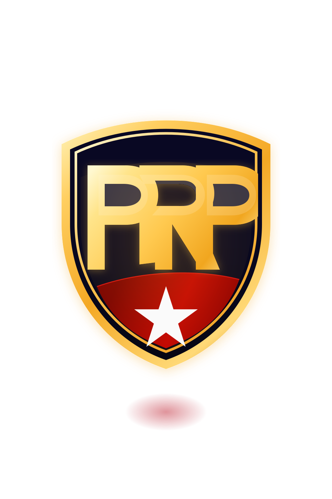

Systems active
Built for founders, operators, and scaling teams
Elite systems development for operators who need leverage
We engineer the systems behind growth.
Plays Ranch Programming Corporation LLC builds automation systems, workflow logic, and operational infrastructure that give founders and operators tighter control, cleaner execution, and a stronger path to scale.
30-minute strategy session:
Identify operational drag, automation opportunities, and the system layer needed for scale.

Capabilities
Strategic systems for businesses that need more control, capacity, and speed.
PRP builds the automation and operating layer that helps serious businesses reduce friction, tighten execution, and scale without turning growth into chaos.
Executive-grade systems delivery
Built for operators who need infrastructure that performs under real pressure.
Every engagement is designed around leverage, visibility, and operational precision.
01
Business Automation Systems
Engineer automation layers that remove repetitive execution, speed up delivery, and create more operating leverage across the business.
02
Workflow Engineering
Design cleaner handoffs, approvals, routing, and execution paths so teams move faster with less confusion and fewer breakdowns.
03
Process Optimization
Identify bottlenecks, remove drag, and rebuild weak operating patterns so the business performs with more consistency and margin.
04
Operational Infrastructure
Install the internal frameworks, data flow, and system architecture required to support scale without losing control.
05
Custom Internal Tools
Create internal tools and dashboards tailored to the way your business actually runs, so teams work with better visibility and control.
06
Scalable System Design
Design the system model behind business growth so automation, reporting, and execution all scale in the same direction.
Why PRP
We build for leaders who need leverage, not more noise.
The difference is not another stack of tools. It is the structure behind them. PRP helps businesses operate with more discipline, cleaner data, better flow, and the confidence to scale.
Precision over patchwork
Each system is shaped around business logic, not generic templates or loose automations.
Built for operational pressure
We design for real load, real teams, and the complexity that appears when growth accelerates.
High-trust execution
Clear decisions, rigorous structure, and an implementation style that keeps leadership informed.
How We Build Systems
A disciplined process for turning operational complexity into scalable execution.
PRP follows a clear systems method so founders and operators can see how automation, infrastructure, and execution improvements are designed, implemented, and scaled.
PRP method
Assess. Architect. Automate. Scale.
A high-level systems process built to reduce friction, increase control, and support serious growth.
Assess
Assess the operation
We examine workflows, bottlenecks, handoffs, and reporting gaps to identify where friction is slowing the business down.
Architect
Architect the system
We define the workflow logic, automation model, data structure, and operating framework required for cleaner execution.
Automate
Automate the execution layer
We build, connect, and refine the automation layer so repeatable work moves faster with less manual drag and more consistency.
Scale
Scale with more control
We strengthen visibility, stabilize the system, and create the operational foundation needed to support the next level of growth.
What matters
Fewer delays. Stronger control. More capacity to execute.
PRP is built around operational outcomes. Better systems give leaders cleaner visibility, more predictable delivery, and more time to direct the business instead of chasing breakdowns.
Next Move
Build the operating layer your business should have had sooner.
If growth is creating friction, weak visibility, or process fatigue, let's design the system behind the next level.
Automation strategy
Infrastructure planning
Executive-level systems design